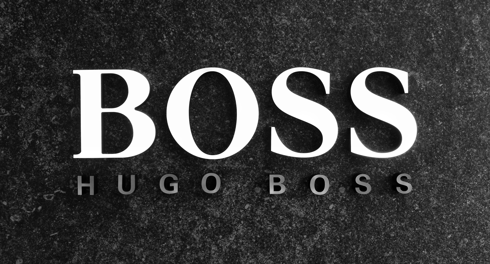
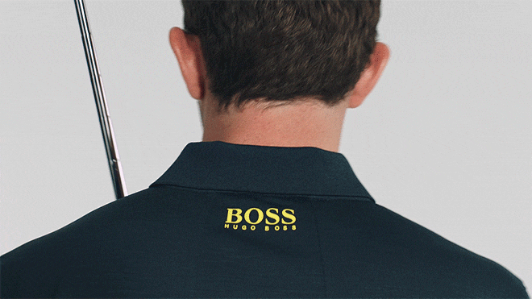

Hugo Boss je više od modnog brenda – to je ikona elegancije i luksuza. Sa gotovo sto godina tradicije, brend je postao sinonim za sofisticiranost, kvalitet i stil. Njegova odeća, obuća, parfemi i aksesoari odišu preciznošću i pažnjom prema detaljima, stvarajući iskustvo koje je jednako vizuelno impresivno koliko i funkcionalno.
Svaka kolekcija Hugo Bossa kombinuje bezvremenski dizajn sa modernim trendovima, čineći da svaki komad postane deo ličnog izraza onih koji ga nose. Od poslovnih odela koja simbolizuju moć i profesionalnost, do casual linija koje odišu suptilnim luksuzom, Hugo Boss ostaje brend koji razume i anticipira potrebe svojih klijenata.
Brend ne prati samo modu – on je vizija stila i statusa, mesto gde klasična elegancija susreće inovativni dizajn. Svaki detalj, od kroja do materijala, pažljivo je osmišljen da stvori osećaj samopouzdanja i pripadnosti svetu uspešnih.
Hugo Boss nije samo brend koji oblikuje odeću – on oblikuje stil života. Svaki detalj, od pažljivo krojenih odela do sofisticiranih parfema i aksesoara, osmišljen je da istakne individualnost i samopouzdanje. Boss ne pristaje na površne trendove, već stvara bezvremenske komade koji nose poruku uspeha i ličnog dostojanstva. Birati Boss znači birati sigurnost u sopstveni stil i jasno definisanu eleganciju.
Za mnoge, Boss je simbol statusa i prepoznatljivosti. On je saveznik u važnim životnim trenucima – od poslovnih sastanaka do svečanih događaja, pružajući svojim nosiocima osećaj pripadnosti jednom ekskluzivnom i prestižnom svetu. Boss kolekcije nisu samo odeća i dodaci, već produžetak ličnosti, izraz ukusa i načina života u kojem dominiraju sofisticiranost, samopouzdanje i moderni luksuz.
Zato Hugo Boss ostaje više od brenda – on je trajna inspiracija i partner u svakodnevnom životu. Njegov stil nadilazi trendove i sezonske promene, pretvarajući se u simbol koji traje godinama. Kada govorimo o Bossu, govorimo o nasleđu koje se ne nosi samo na telu, već i u stavu, ponašanju i samopouzdanju. To je poruka da prava elegancija nikada ne izlazi iz mode.
Od samih početaka, Boss kombinuje nemačku preciznost i kvalitet krojenja sa inovacijama u dizajnu. Njegova odela postala su statusni simbol poslovnih ljudi, umetnika i javnih ličnosti, a parfemi i aksesoari dodatno naglašavaju luksuzan stil života.
Ali snaga Hugo Bossa nikada nije bila samo u odelima. Brend je kroz decenije pokazao sposobnost da prepozna promene u svetu mode i da na njih odgovori modernim kolekcijama koje ostaju verne osnovnim vrednostima – eleganciji, vrhunskom materijalu i savršenom kroju. Na taj način Boss spaja najbolje iz prošlosti sa svežim idejama budućnosti.
U eri digitalizacije i brzih trendova, Hugo Boss ulaže u nove tehnologije, održive materijale i inovativne procese proizvodnje. Kolekcije se sve češće izrađuju od recikliranih vlakana i ekološki prihvatljivih materijala, a istovremeno se zadržava beskompromisna estetika i luksuz koji prate brend. Ovaj balans između tradicije i inovacije omogućava Bossu da ostane relevantan i da privlači kako dugogodišnje poštovaoce, tako i novu generaciju kupaca.

Patrick Cantalay, ambasador Bossa
Danas, Hugo Boss je mnogo više od lokalnog nemačkog brenda – on je globalni ambasador stila i luksuza. Sa stotinama ekskluzivnih prodavnica širom sveta, Boss je prisutan u najvažnijim modnim prestonicama: Njujorku, Londonu, Parizu, Milanu, Tokiju i Šangaju. Svaka prodavnica je pažljivo osmišljena da ne bude samo mesto kupovine, već iskustvo koje oslikava filozofiju brenda – eleganciju, savremenost i sofisticiranost.
Hugo Boss ne gradi samo prodajnu mrežu, već i snažnu vezu sa globalnim tržištem. Njegove modne revije privlače pažnju vodećih svetskih medija, a kampanje u kojima učestvuju poznate ličnosti, sportisti i umetnici dodatno učvršćuju imidž brenda. Chris Hemsworth, Naomi Campbell i mnoge druge javne ličnosti postale su deo Boss priče, donoseći brendu univerzalnu prepoznatljivost.
Pored fizičkog prisustva, Hugo Boss se aktivno razvija i u digitalnom svetu. Online prodavnice i saradnje sa globalnim platformama omogućavaju kupcima da dožive Boss iskustvo iz bilo kog dela planete. Time Boss postaje ne samo modni brend, već i most između tradicije luksuzne mode i modernog, digitalnog načina života.
Globalna prisutnost znači i odgovornost – zato Boss sve više ulaže u održivost i društvenu odgovornost. Projekti koji podržavaju ekološku proizvodnju, smanjenje ugljeničnog otiska i fer uslove rada postali su deo brenda, dajući kupcima priliku da biraju ne samo stil, već i vrednosti.